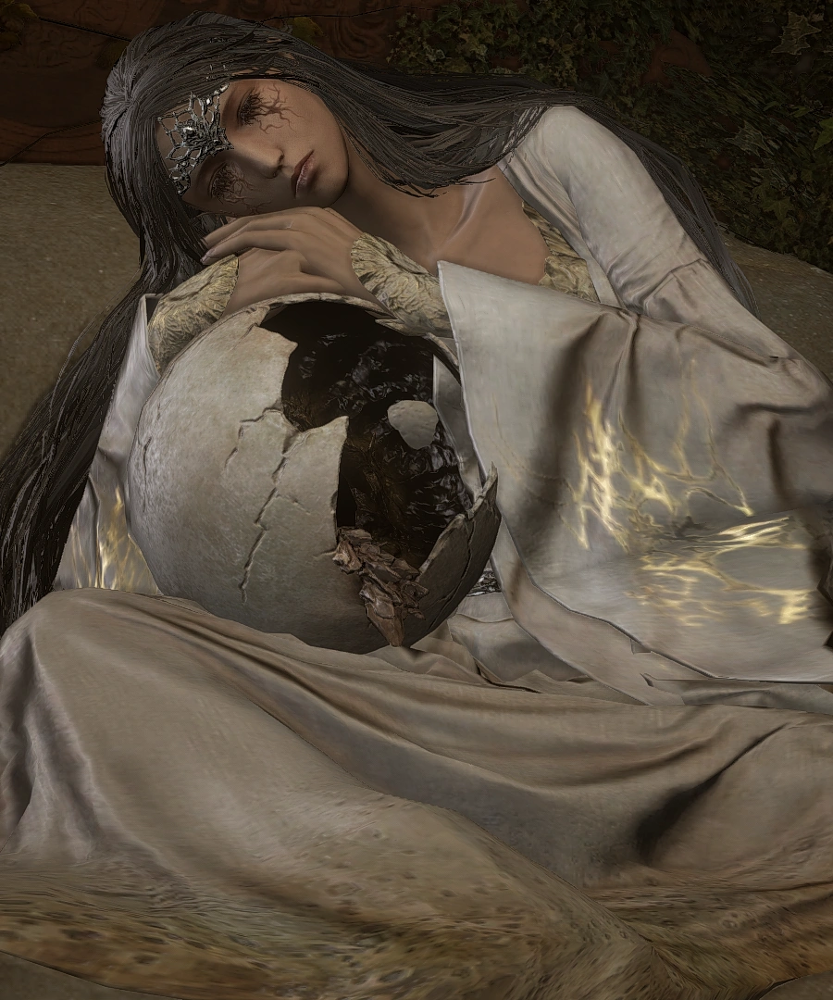

Filianore |
||
|---|---|---|
|
 |
Filianore é uma NPC de Dark Souls 3 encontrada em sua segunda
DLC, The Ringed City, ela é encontrada em um sono eterno
segurando uma estranha esfera que parece um ovo. Ela não contem
nenhum dialogo, porém interagir com ela é possivel no primeiro
encontro, o que causa a destruição do objeto que ela segura e
acorda ela.
Filianore tem uma aparência diferente de qualquer outro NPC
encontrado no jogo, ela contem uma pequena coroa em sua testa,
longos cabelos e um robe branco com adornos dourados, além de
que em seus olhos, algum tipo de substância sólida preta se
encontra, possivelmente os tapando para sempre, além de ser
semelhante a aparência de choro.
Filianore pode ser encontrada ao final da cidade anelar, dentro
de uma alta torre, dormindo em uma grande cama em uma sala
protegida por Halflight.
Mais tarde o corpo dela é encontrado no Descanso de
Filianore.
Filianore é a filha mais nova de Gwyn, e também a filha
escondida do rei, ela foi dada aos Lordes Pigmeus junto da
cidade anelar quando criança, e foi prometida por Gwyn que um
dia ele voltaria por ela, mas essa promessa é uma mentira
{kind=link}